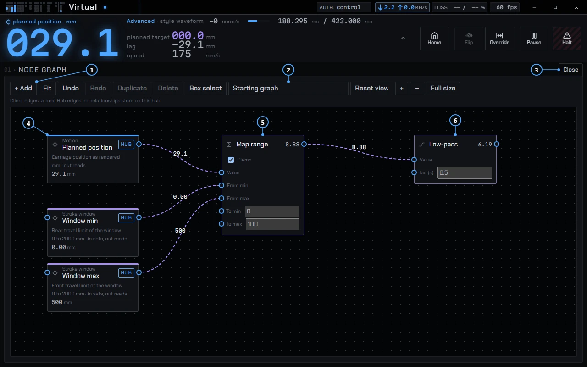

Node editor
The node editor wires one value to another. A machine setting, a toy's control or a number you type becomes a node, and a wire carries its value to the next node. It works like patching a modular synth: sources on the left, processing in the middle, a target on the right.
Status WIP
The node editor is in the app and still changing. You reach it as a module on the Dash. See the graph notes for the current node list.
Open it
The editor is a built-in plugin whose module is called Node graph. To use it, put it on a Dash layout:
- Open the Dash and press the wrench on the selected layout in the sidebar to enter edit mode.
- Right-click the grid and pick Node graph from the module list.
- Leave edit mode. The card shows a still preview. Click it to use it, and press Open for the full size.
Until you click into the editor, the scroll wheel scrolls the page. Escape or a click outside lets go.

- + Add opens the list of nodes to add.
- The graph menu, set to Starting graph.
- Close returns the card to its normal size.
- Planned position is a source node. It reads from the hub.
- Map range rescales a value. The two stroke window nodes set its input range.
- Low-pass smooths what Map range sends it.
A shortcut: right-click any setting and pick Send to node editor. The node lands in the editor, or waits for it if none is open.
Nodes and wires
A node is a block with input sockets on its left and one output socket on its right. Drag from one socket to another to wire them. Drag a wire off a socket and release it over empty canvas to search for a node that fits.
Source and target nodes
A field node is a setting from the connected hub, shown with its card name, description, range, unit and live value. Used as a source it reads. Used as a target it writes, through the same path as a normal control, so a refusal appears the same way. A toy node is a control of a device connected to Phosphor's built-in buttplug server. Each field or toy appears once.
Value types
Sockets carry float, int or bool. There are no arrays. Types convert the way Blender's do: int to float is exact, float to int rounds, a bool is 0 or 1, and any nonzero number reads as true. A small ring at a wire's midpoint means the two ends differ in type and a conversion happens there.
Operation nodes
One node per family, with the operation in a dropdown:
| Family | Nodes |
|---|---|
| Input | Value, Integer, Boolean, and Plan (the hub's plan in flight: end, elapsed, remaining, duration) |
| Math | Math (add, subtract, multiply, divide, power, min, max, abs, round, floor, ceil, modulo, square root, sine, cosine), Clamp, Map Range |
| Logic | Compare, Boolean Math, Switch, Gate |
| Converter | Threshold, Slew, Low-pass, Interval, Rate limit, Scope |
An unconnected input uses the number you type on the node. One input takes one wire: a second wire replaces the first. A wire that would close a loop is refused with refused: would loop. Divide by zero, and any other undefined result, gives 0, so a patch never sends NaN to the machine.
The synth parallels: Slew limits how fast a value may rise or fall, Low-pass smooths it with a time constant, Threshold turns a value into on or off with hysteresis, Gate passes a value only while a bool is true (closed, it gives the target its safe value), and Scope plots a value over the last 10 seconds as it passes through.
Where a chain runs
A node target shows a badge, hub or client, saying where its chain runs.
- Hub
- One map node between two catalog fields, with an accessory field as the target, becomes a relationship stored on the hub (Valence spec §8.11). The seven maps are linear clamp, invert, threshold with hysteresis, slew limit, low-pass, gate and piecewise table. The hub keeps evaluating it after you close Phosphor.
- Client
- Anything else, meaning any operation node or a toy, runs inside Phosphor every 50 ms (20 Hz). That suits smoothing and mapping, not audio-rate work. Client chains stop when Phosphor closes.
Client chains follow the stop rules. With no hub link, or after an e-stop or a pause, every client chain disarms, and each target gets its safe value once. A machine field target has no client-side safe value, so the hub applies its own pause. A chain with a missing input disarms with the reason on the status line, for example disarmed: Multiply has no a. A hub edge shows its saved state only after Phosphor reads it back from the hub.
What you can build
The More menu has a Starting graph list. A starting graph is placed below what is already there as one undoable step, and you edit it like any other nodes. Two are included:
- Mirror machine position to Buttplug
- The machine's target, scaled by its window, drives a toy's position, with the update interval as the duration.
- Mirror machine plan to Buttplug
- The hub's plan end drives a toy's position, with the plan's remaining time as the duration.
A toy that takes a position and a duration has a Duration socket under its head. An unwired Duration is a number you set, 100 ms by default. A device's own update rate is a ceiling on top; a Rate limit before the Interval keeps the two matched.
Other patches follow from the nodes: a Low-pass between a speed setting and a toy to soften it, a Threshold and a Gate to switch one control on when another passes a level, or Math to scale one range onto another.
Keys
| Input | Does |
|---|---|
Shift+A, right-click | Add menu at the pointer |
F3 | Search every node source |
Shift+F10, Menu key | Add menu |
Tab, Enter | Move between nodes and sockets. Enter on two sockets wires them. |
| Arrows | Move the selection (Shift for five steps) |
Delete | Delete the selection |
Ctrl+Z, Ctrl+Shift+Z | Undo, redo |
Ctrl+D, Ctrl+A | Duplicate, select all |
Every edit is one undo step: placing, wiring, cutting, deleting, moving, duplicating, changing an operation or a value.
Saving
There is no Save button. Phosphor stores the graph on your computer after each edit: nodes, wires, operations and the view. A hub edge is also written to the hub, which keeps it. Client chains come back when you reopen Phosphor and run only while it is open and linked. The graph is not synced to other computers.